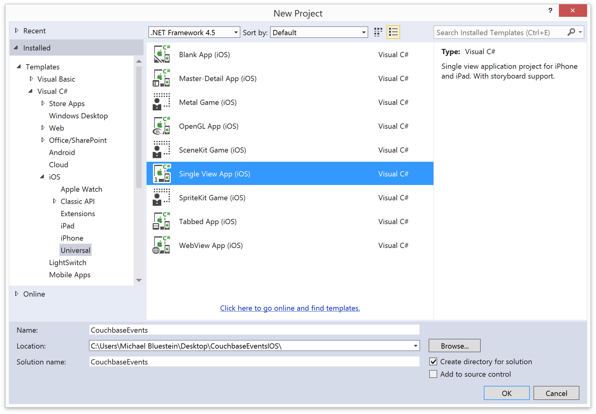

This lesson teaches you to
Create a new Xamarin.iOS project using Visual Studio
This lesson describes how to set up the Couchbase Lite environment for Xamarin.iOS using Visual Studio.
Set up the environment
Before you can build an app, you need to set up your development environment:
-
Download and install Xcode from the Mac App Store.
-
Download and install the Xamarin Unified Installer.
For more details on setting up Xamarin see the installation doc in the Xamarin Developer Center.
Create a new project
Launch Visual Studio
In the Start Page choose New Project.
In the New Project window, select iOS > Universal > Single View App.
-
Enter CouchbaseEvents for the project name, choose a location to create the project, and click Create:
 Launch Xamarin.iOS Build Host on your Mac and pair it with Visual Studio. See Introduction to Xamarin.iOS for Visual Studio for more information on connecting Visual Studio to your Mac.
Add Couchbase Lite from NuGet
To use Couchbase-Lite in your Xamarin.iOS project, you need to add the Couchbase Lite package from NuGet. You can do this using the built-in NuGet support in Visual Studio.
Right-click the CouchbaseEvents project in the Solution Explorer and select Manage NuGet Packages to open the NuGet Package dialog.
Search for Couchbase Lite, select it from the list, and click Install to add Couchbase Lite along with its dependencies to the project.

Build and run the app
Running the empty app at this point verifies everying is set up correctly.
In the Visual Studio tool bar, select an iOS simulator such as iPhone 5s
Click the Run button in the Visual Studio tool bar to launch the simulator and run the app.